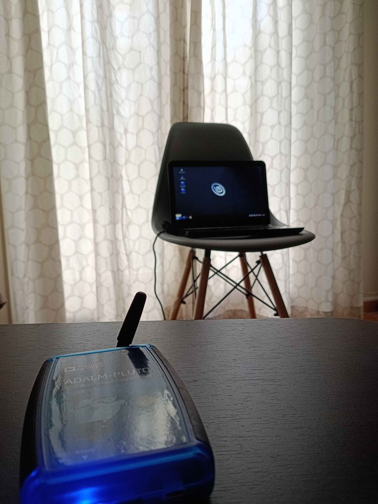
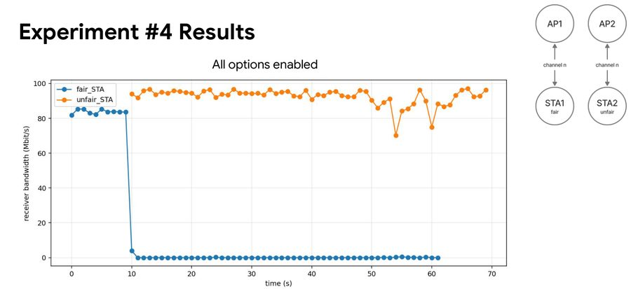
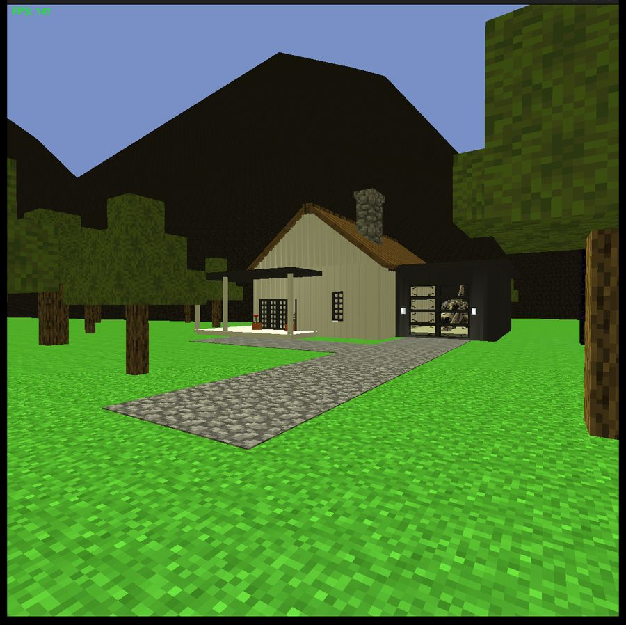
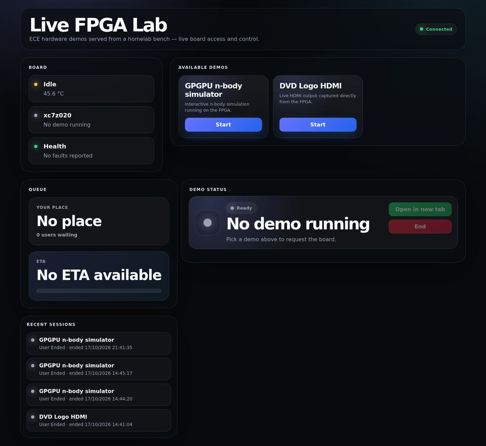

RISC-V GPGPU
32 RISC-V cores we designed, running on a real FPGA
Runs an n-body step 2.38× faster than the ARM core on the same chip. My colleagues now use it on the Smart Zynq SL, and it runs live in the FPGA lab.
Currently working on
Graphics, DDR, warp scheduling
Web, media, remote access, monitoring
I build systems from code down to hardware: GPUs on FPGAs, CUDA programs, operating systems and distributed systems.
Electrical and Computer Engineering student at the University of Thessaly
A real FPGA board in my homelab. Anyone can run demos on it from the browser.
Example state; the real panel reads the live stream
Course projects, most of them built in teams.
32 RISC-V cores we designed, running on a real FPGA
Runs an n-body step 2.38× faster than the ARM core on the same chip. My colleagues now use it on the Smart Zynq SL, and it runs live in the FPGA lab.

Read data from a computer with no network, using only its memory's radio noise


Running programs move between machines without stopping
A thread library with its own preemptive scheduler, written from scratch
Built on my own, outside any course.

A real FPGA board anyone can use from the browser
The bouncing DVD logo, drawn by hardware and steered by tilting the board
The servers at home that run my services and the FPGA lab
From 2019 to 2023 I wrote Java plugins, first for my own server, ColonyMC, which reached 20–30 players, then as a freelancer for other servers.
Smaller course projects, grouped by course. Each opens its section on the course page.
Education, work and teaching on one time axis. I was picked as a volunteer TA in each course for my grade.
Tools from my projects. The number is how many projects on this site use each one.
Questions about a project, or want to talk? Email me.
Styled mock in the circuit-board direction. A throwaway preview, not the real build. Live lab values are an example state; pictures come from the project repos.